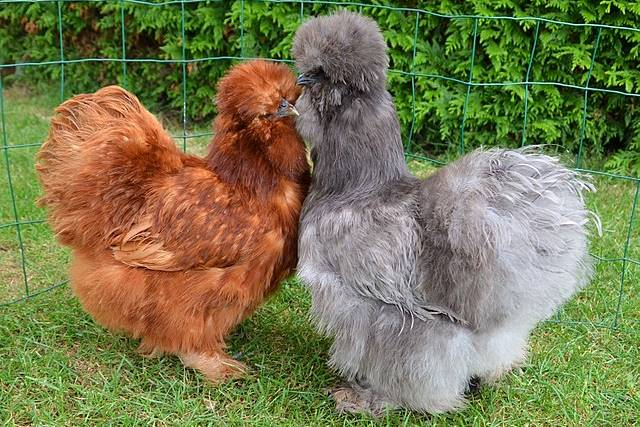

ไก่ซิลกี้ (Silkie)

ไก่ซิลกี้เป็นไก่สายพันธุ์โบราณของเอเชียตะวันออก โดยทีต้นกำเนิดจากประเทศจีน
บริเวณหัวของไก่ซิลกี้จะมีลักษณะเป็นก้อนขนฟู ๆ โดยขนไก่ซิลกี้ดั้งเดิมจะเป็นมีสีดำ สีขาว และสีเทา จะงอยปากสั้นเป็นสีเทาเข้มหรือสีน้ำเงิน ดวงตากลมสีดำขลับ ตุ้มหูสีฟ้าน้ำทะเล ลำตัวกว้าง หลังสั้น มีนิ้ว 5 นิ้ว ซึ่งปกติแล้วไก่จะมี 4 นิ้ว ขาสั้น และกว้างกว่าปกติ บริเวณเท้ามีขน มีหนัง และกระดูกสีดำ ลักษณะขนไก่ซิลกี้ก็แตกต่างจากไก่สายพันธุ์อื่นคือ ในแผงขนไก่ซิลกี้ไม่มีจุดเชื่อมของขนเหมือนไก่พันธุ์อื่น ๆ ทำให้ขนไก่ซิลกี้มีลักษณะฟูนุ่มเหมือนขนแมว
นิสัยของไก่ซิลกี้จริง ๆ แล้วเป็นไก่ที่นิ่ง สงบ เป็นมิตรกับคน เด็ก ๆ สามารถเลี้ยงได้ เพราะไก่ซิลกี้ค่อนข้างเชื่อง จับได้ และบินไม่สูงมาก จึงเหมาะกับการเลี้ยงไว้ที่สวนหลังบ้านที่มีรั้วไม้ระแนงเตี้ย ๆ กั้นได้